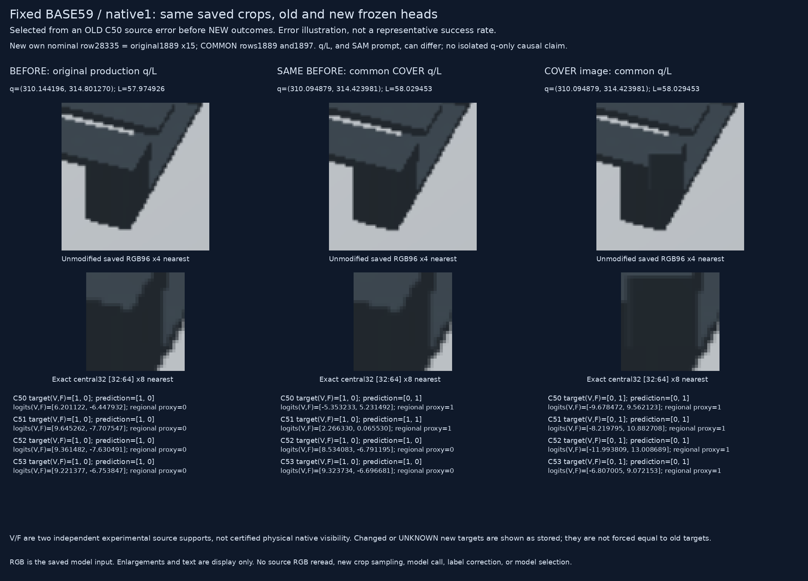
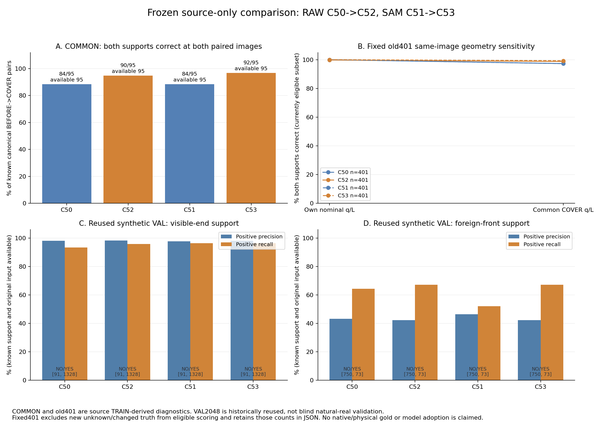

BASE59/native1 was selected from an old C50 source error before the new outcomes. It is an error illustration, not a representative success rate. All clean96/central32 PNG bytes are copied unchanged from the earlier saved case. No new crop sampling or model call.

COMMON and fixedold401 are TRAIN-derived diagnostics. VAL2048 is historically reused, not blind natural-real validation. Independent source support targets and literal owner are not certified physical native visibility. No model adoption or full-goal solution is claimed.
